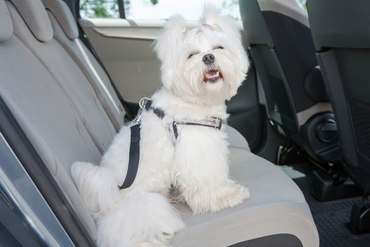
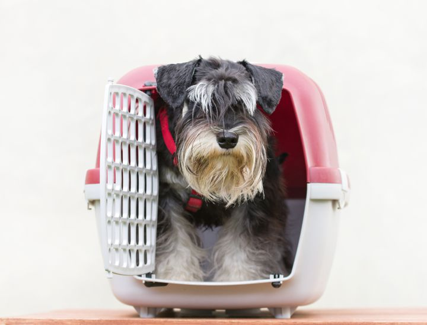

Si queremos disfrutar de un viaje con nuestro perro es necesario que montar en coche lo asocie a una experiencia positiva y natural. Que viaje y se encuentre relajado es algo de lo que tendremos que hacernos cargo, pues de lo contrario será una situación muy estresante para él y con el tiempo se agravará. Por ello, es muy importante trabajar en acostumbrarle desde un principio tanto en lo que es el vehículo en sí, el movimiento y el transportín, ya que siempre hay que cumplir los requisitos necesarios para viajar con mascotas. Además de atender a los requisitos de viaje de tu mascota, recuerda que tú como viajero deberás informarte de las recomendaciones y obligaciones en función del destino, entre ellas un seguro de viaje con garantías de asistencia médica, transporte sanitario y repatriación, situaciones que podrían conllevar un gran desembolso en el extranjero.
Al igual que los niños, los cachorros absorben mejor todo y son más flexibles. A un perro adulto le cuesta más cambiar sus hábitos y tener experiencias nuevas. Por esto, cuanto antes comencemos a subir a nuestro perro al coche antes aprenderá que es algo bueno y positivo, y por lo tanto a estar tranquilo. Lo mejor, en cualquier caso, es hacer trayectos de corta duración al principio e ir alargando la distancia progresivamente. Finaliza el viaje en algún lugar que le guste a tu perro, como el parque. Así lo asociará con una experiencia positiva. Mímalo y prémialo por su buen comportamiento. Antes, durante y después actúa de una manera tranquila, sin alteraciones, que el perro reciba una sensación de calma y tranquilidad. No porque sea algo nuevo para él debemos prestarle mucha más atención. De esta forma evitaremos que se altere. Si el perro jadea continuamente o se encuentra salivando será porque está estresado.
En primer lugar, hay que enseñarle a entrar y salir del coche por su cuenta, sin forzar, a menos que sea una raza muy pequeña y no alcance. Además, intenta habituarlo a no salir del vehículo en lugares peligrosos donde, por ejemplo, circulen más coches. Cuando el perro esté ya dentro, arranca el coche y apágalo para que se acostumbre al sonido y a la vibración. Después, comenzaremos a moverlo poco a poco hasta circular, haciendo pequeños trayectos. No te olvides de chequear que la temperatura interior no sea supere los 23 grados, que el perro tenga suficiente ventilación y que no le dé el sol directamente. Durante el viaje, haz una parada cada dos horas para que tanto tú como tu perro podáis estirar el cuerpo y tomar el aire. Aprovecha esta ocasión para darle agua y evitar que se deshidrate. Nunca lo dejes solo en el coche, y menos con las ventanas cerradas. Otro factor a tener en cuenta es el ambientador, ya que puede incomodar a nuestros perros si es demasiado fuerte para ellos. Intenta que sea un olor suave o retíralo del turismo cuando viajes.
Ya que si queremos viajar en tren, barco o en avión deberemos meter a nuestro perro en un transportín, lo mejor es acostumbrarlo cuanto antes, sobre todo si se trata de un perro mediano o de gran tamaño. Ten en cuenta que el transportín debe ser lo suficientemente grande como para que puede está de pie. Quita la parte superior del transportín y coloca su cama o una manta para que el perro pueda tumbarse. Premia con chucherías cuando esté tranquilo dentro del transportín. Después, cuando esté hecho al olor, al tacto y vea que es un sitio más, añade la parte de arriba, pero no lo cierres. Lanza algunos premios dentro y procura que el perro pueda entrar y salir sin problema. Poco a poco ve moviendo la puerta de la jaula y después ciérrala durante unos segundos. Cuando lo hagas deja un premio en el transportín. Jamás le obligues a entrar en la jaula, pues le provocarás aversión al sentirse atrapado. Progresivamente, deja la puerta cerrada más tiempo. Nunca le saques si está nervioso o ladrando, tranquilízale con palabras alentadoras y procura que no permanezca más de cuatro horas encerrado, dos si es cachorro. Si durante el trayecto tu perro consigue estar en un estado de tranquilidad, a la llegada a tu destino se sentirá igual de calmado, por lo tanto aceptará mejor el cambio de lugar y disfrutará más.